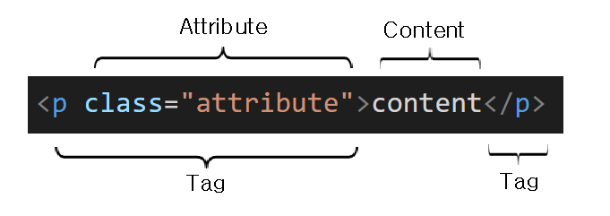

HTML은 HyperText Markup Language의 약자로 웹 페이지를 구성하는 마크업 언어이다.
HTML의 기본 구조는 크게 Head와 Body의 영역으로 구성되며 각 영역은 <head> Tag와 <body> Tag로 구별한다.
각 영역에는 HTML Element가 존재한다.
HTML은 Element로 구성되어 있으며 Element는 Tag와 Attribute(속성), Content로 구성되어 있다.

Tag는 부등호(<>)로 묶인 HTML 기본 구성 요소로 Start Tag(Opening Tag)와 End Tag(Closing Tag)로 구성되어 있다.
Start Tag에 다양한 Attribute가 들어갈 수 있으며 End Tag는 슬래쉬(/)를 넣어 해당 태그가 끝났음을 의미한다.
Tag 내부(Start Tag와 End Tag 사이)에 Content가 올 수도 있으며 만약 Content가 없다면 Self-closing Tag를 사용할 수 있다.
Self-closing tag는 End tag를 사용하지 않고 Start tag의 끝에 한칸의 공백을 두고 슬래쉬(/)를 사용하여 해당 태그가 끝났음을 알린다.
예를들면 아래와 같다.
<img />
Semantic의 사전적 의미는 "의미론적인" 이라는 뜻으로 Semantic Tag를 직역하면 의미론적인 태그를 말한다.
HTML 작성시 div나 span 등 그 이름만 들어서는 그 내용이 무엇을 뜻하는지 한번에 알아보기가 힘든 경우가 있다.
HTML5로 넘어오면서 이 문제를 해결하기 위해 각 Tag들이 무엇을 뜻하는지 명시적으로 표한하기 위해 Semantic Tag를 활용하기 시작했다.
Semantic Tag의 사용 장점은 <nav>, <main> 등과 같이 각 태그들이 무엇을 의미하는지 한눈에 알아보기 쉽도록 구현할 수 있다는 것이다.